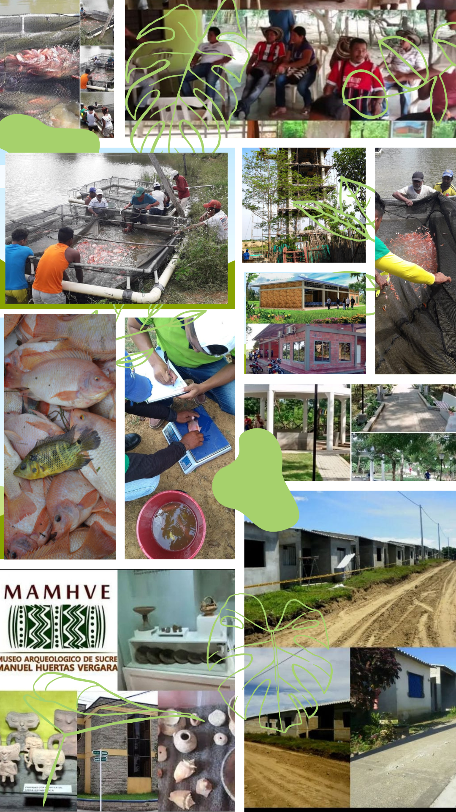

+57 3128284509

Involúcrese con una Mano Amiga
Fundación para la Investigación y el Desarrollo de Sucre "FIDES"

Transformando Vidas en Sucre y la Costa Caribe
Únete a nuestra misión por un desarrollo humano integral y sostenible.

Más de 40 Años Generando Impacto Social
Apoyamos a campesinos, artesanos, mujeres, jóvenes y niños.

Comprometidos con el Desarrollo Humano Integral
La Fundación para la Investigación y el Desarrollo de Sucre (FIDES) es una ONG constituida el 16 de marzo de 1983. Desde entonces, nos hemos dedicado a impulsar el desarrollo en la región.
Nuestra Comunidad
Trabajamos directamente con campesinos, microempresarios, artesanos, desplazados, pescadores, mujeres, jóvenes y niños de los estratos 1 y 2 de la Costa Caribe Colombiana.
Nuestro Propósito
Contribuir al Desarrollo Humano Integral y Sostenible de los sectores con menos oportunidades en Sucre y la Costa Caribe. Nuestra meta máxima es la satisfacción y el disfrute pleno de los derechos humanos.
Nuestra Estrategia
- Potenciar las capacidades de personas y grupos sociales.
- Fomentar valores de cooperación, solidaridad y respeto.
- Construir comunidades con autonomía, gestión y liderazgo.
Nuestro Objetivo
Ser una ONG que contribuye al Desarrollo Humano Sostenible de sectores vulnerables y excluidos a través de la ejecución de proyectos sociales, económicos, culturales y ambientales.
Nuestros Pilares
- Equidad Social.
- Competitividad Productiva.
- Sostenibilidad Ambiental.
- Participación Comunitaria.
Meta: Para el año 2025, ser la ONG de mayor reconocimiento a nivel Departamental.